Original native patterns; deep-purple Ichor and pale-blue Divine Water. Six editable Aseprite files. No runtime definitions or map changes. Native software context below is an offline rendering, not in-game acceptance.
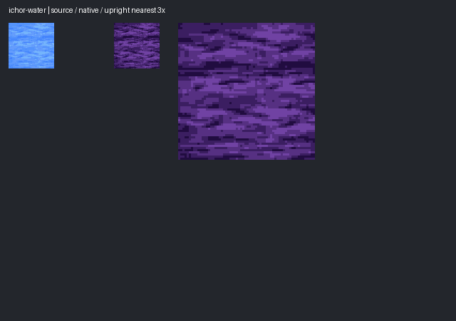
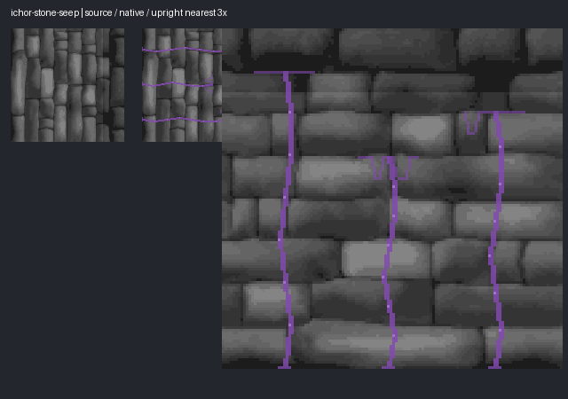
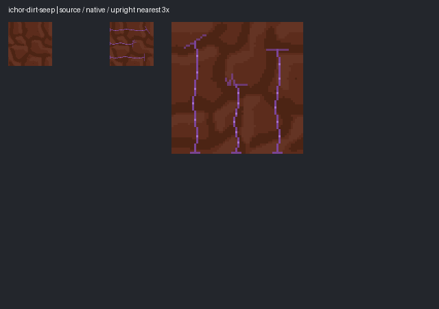
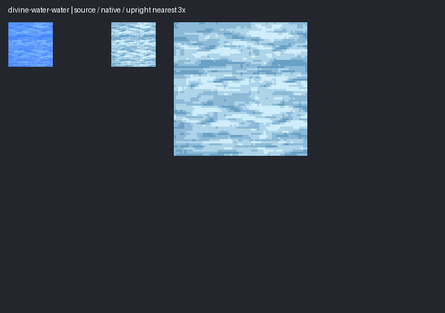
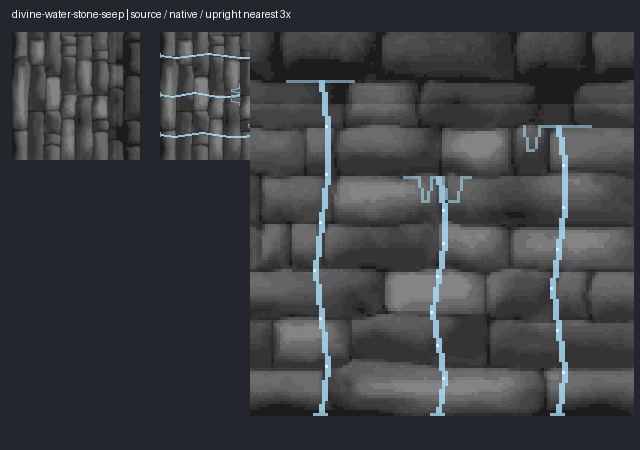
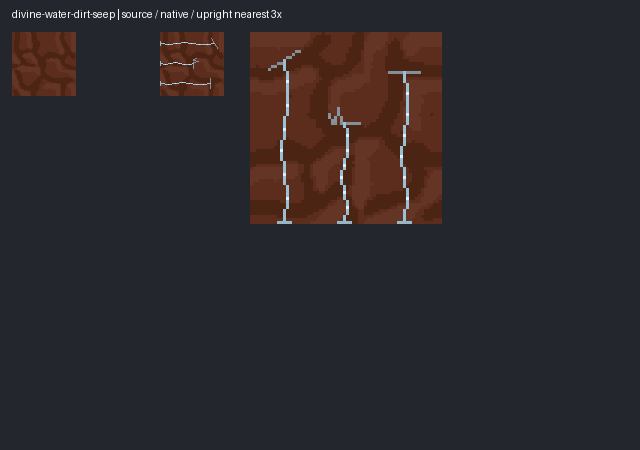
192- and275-unit walls; unchanged geometry. View both faces/axes in-game before production acceptance.
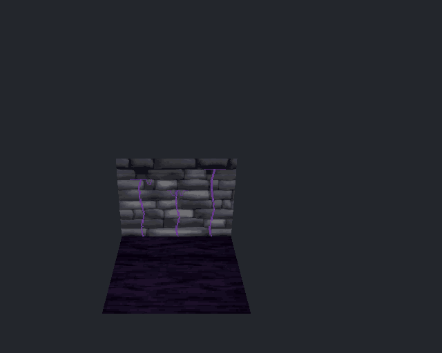
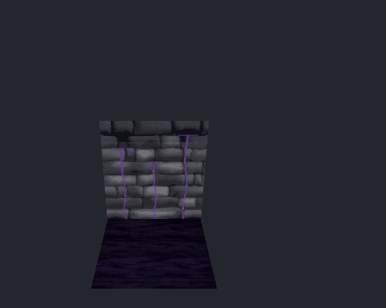
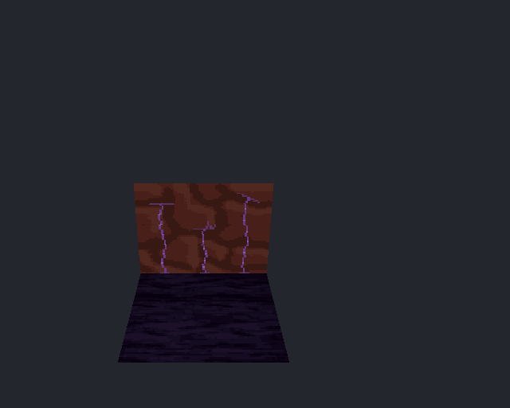
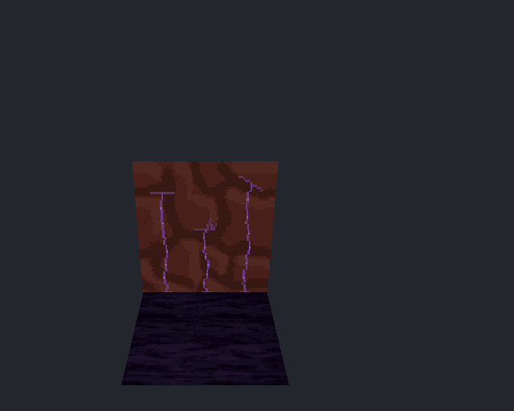
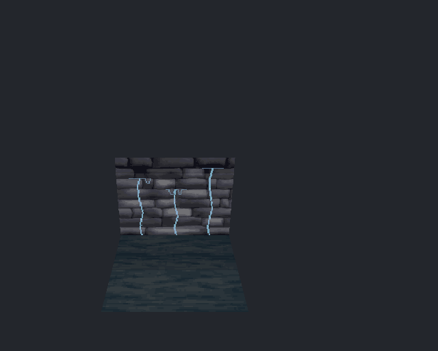
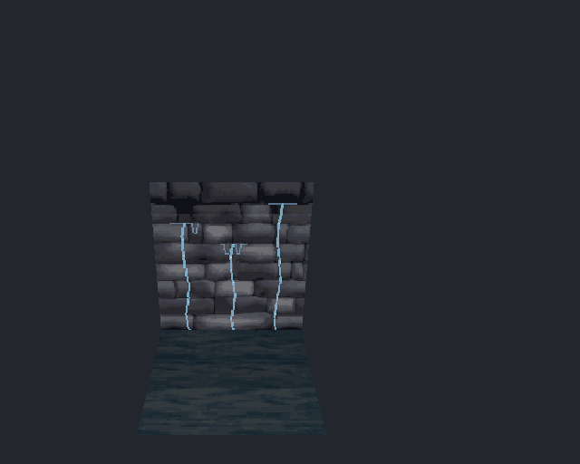
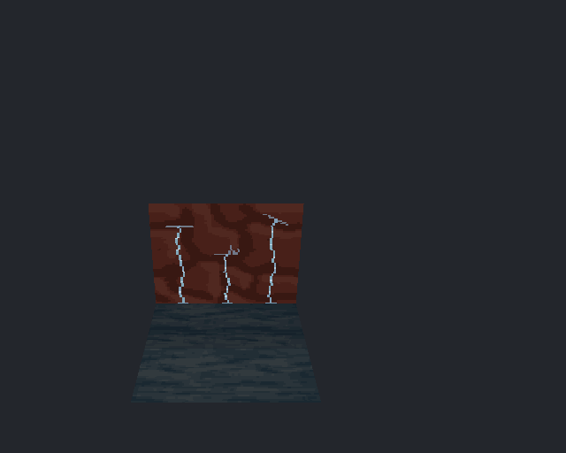
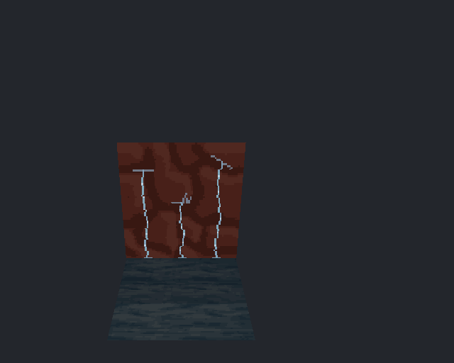